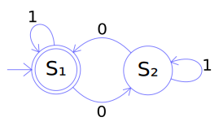
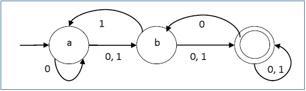

You do not have to learn much about theoretical computer science to get this project done. In fact, it is enough to study the essential definitions and gain some intuitions about them. The challenge of this project lies elsewhere, specifically in the technical aspects of programming.
Finite Automata is a simple mathematical model of computation that can be used to specify languages. A language is a set of words. The expressive power of the model is relatively weak, and is only capable of describing languages with very regular structure. Nevertheless, it is an useful model with many theoretical and practical applications.
In this model, the specification of each language is accomplished via recognition. Each particular Finite Automaton (FA) recognize some language in the sense that the FA checks whether a word belongs or do not belongs to the language. When applying the FA to a word, the FA merely produces binary information (one Boolean value) about that word. Either:
Among other elements, a FA is characterized by a finite set of states. The FA transitions from state to state while transversing some input word, one symbol at a time.

As an exercise, imagine the FA running for each of the following input words: '', '00', '011110', '011111', '000'.
As another exercise, identify the five elements that characterize this FA: input alphabet, states, initial state, transition relation, accept states.
In a Non-deterministic Finite Automaton, the transition relation is not a proper function meaning that, there may be multiple results for each pair (state, symbol). In this situation it is harder to process the input word because, at each step of the computation, there may exist alternative paths that can be followed. Furthermore, to accept the input word, it is enough that one of the paths makes the NDFA stops at an accept state. So, to reject a word, we need to make sure that all the paths make the automaton stop outside an accept state. (The standard definition of NDFA has one further element - empty string transitions - but we leave them out to simplify.)
Here is an example of NDFA with lots on non-determinism. Note that, for instance, considering the state "a", the symbol "0" has two transitions associated: a transition to the state "a" and a transition to the state "b".

For the representation of FAs, we need multiple OCaml types:
type symbol = char;; (* our symbols are represented by chars *)
type word = symbol list;; (* our words are represented by lists of symbols *)
type state = string;; (* our states are represented by strings *)
type states = state list;;
type transition =
state (* state *)
* symbol (* consumed input symbol *)
* state (* next state *)
;;
type transitions = transition list;;
type fAutomaton = {
initialState: state; (* Initial state *)
transitions: transitions; (* Transition relation *)
acceptStates: states (* Accept states *)
};;
To exemplify, here is an interesting concrete DFA over the alphabet {'a','b','c','d'} that recognizes the language of all the strings that contain the substring "abc":
let abc = {
initialState = "START" ;
transitions = [
("START",'a',"A"); ("START",'b',"START"); ("START",'c',"START"); ("START",'d',"START");
("A",'a',"A"); ("A",'b',"AB"); ("A",'c',"START"); ("A",'d',"START");
("AB",'a',"A"); ("AB",'b',"START"); ("AB",'c',"SUCCESS"); ("AB",'d',"START");
("SUCCESS",'a',"SUCCESS"); ("SUCCESS",'b',"SUCCESS"); ("SUCCESS",'c',"SUCCESS"); ("SUCCESS",'d',"SUCCESS")
];
acceptStates = ["SUCCESS"]
};;
As another example, now a somewhat strange FA. Is is non-deterministic because there are two transitions for the symbol 'a' in the state "SUCCESS". Furthermore, it includes an useless state - "UNREACHABLE" - that is unreachable from the initial state and another useless state - "UNPRODUCTIVE" - from which no accept state is reachable.
let abcND = {
initialState = abc.initialState ;
transitions = abc.transitions @ [
("SUCCESS",'a',"UNPRODUCTIVE");
("UNREACHABLE",'a',"SUCCESS");
("SUCCESS",'e',"UNPRODUCTIVE"); ("UNPRODUCTIVE",'a',"UNPRODUCTIVE")
];
acceptStates = abc.acceptStates
};;
The aim of this project is to write a closed module named "FiniteAutomata" containing a data representation for FAs and containing the implementation of some functions over FAs.
The module interface has already been fully written and you are not allowed to change it: FiniteAutomata.mli. As you can see, the data representation is public and there is also a small number of public functions declared. All the other entities you define in the module body will be private.
Use this file as starting point to write your module body: FiniteAutomata.ml.
Around 80% of the grade of your group is automatically assigned by Mooshak. The remaining 20% is assigned manually by the teacher, who analyzes the quality of your code.
A special case: In case of code of extremely bad quality, or code that uses the forbidden imperative mechanisms of OCaml, or code that constantly simulates imperative mechanisms and concepts, a special rule will be used so that the grade will be always below 50%, even if the program works well.
To compile your module, Mooshak will use the following command
ocamlc -c FiniteAutomata.mli FiniteAutomata.mlAfter the compilation, Mooshak tests the module in the interpreter like this:
$ ocaml
Objective Caml version 4.02.3
# #load "FiniteAutomata.cmo";;
# open FiniteAutomata;;
...
...
It is not mandatory to develop this project in Linux. However, you should test the final version of your module in the laboratories because the official environmental for this project is the Linux version installed in the laboratories.
It is also recommended you develop the project in Eclipse but, of course, this is also not mandatory. The best way to use Eclipse in this project is to develop the module using only the OCaml's interpreter. Please, make a backup of the file "FiniteAutomata.ml" once a while, because the file can disappear as result of human error or as result of a software/hardware malfunction.
All the functions that return simple lists require the result to be sorted and free of repetitions. Use the provided function canonical to achieve this.
Except where indicated, the functions should work with both deterministic and non-deterministic automata.
getAlphabet : fAutomaton -> symbol list let getAlphabet fa = ...
# getAlphabet abcND;; - : symbol list = ['a'; 'b'; 'c'; 'd'; 'e']
getStates : fAutomaton -> state list let getStates fa = ...
# getStates abcND;; - : state list = ["A"; "AB"; "START"; "SUCCESS"; "UNPRODUTIVE"; "UNREACHABLE"]
gcut : state -> transitions -> transitions * transitions let gcut s ts = ...
# gcut abcND.initialState abcND.transitions;;
- : transition list * transition list =
([("START", 'a', "A"); ("START", 'b', "START"); ("START", 'c', "START");
("START", 'd', "START")],
[("A", 'a', "A"); ("A", 'b', "AB"); ("A", 'c', "START");
("A", 'd', "START"); ("AB", 'a', "A"); ("AB", 'b', "START");
("AB", 'c', "SUCCESS"); ("AB", 'd', "START"); ("SUCCESS", 'a', "SUCCESS");
("SUCCESS", 'b', "SUCCESS"); ("SUCCESS", 'c', "SUCCESS");
("SUCCESS", 'd', "SUCCESS"); ("SUCCESS", 'a', "UNPRODUTIVE");
("UNREACHABLE", 'a', "SUCCESS"); ("SUCCESS", 'e', "UNPRODUTIVE");
("UNPRODUTIVE", 'a', "UNPRODUTIVE")])
determinism : fAutomaton -> bool let determinism fa = ...
# determinism abc;; - : bool = true # determinism abcND;; - : bool = false
reachable: fAutomaton -> states let reachable fa = ...
# reachable abcND;; - : state list = ["A"; "AB"; "START"; "SUCCESS"; "UNPRODUTIVE"]
productive: fAutomaton -> states let productive fa = ...
# productive abcND;; val z : state list = ["A"; "AB"; "START"; "SUCCESS"; "UNREACHABLE"]
accept : word -> fAutomaton -> bool (* pre: fa is deterministic *) let accept w fa = ...
# accept [] abc;; - : bool = false # accept ['a';'b';'c'] abc;; - : bool = true # accept ['d';'d';'a';'b';'c';'d';'d';'d'] abc;; - : bool = true # accept ['a';'b';'b';'c'] abc;; - : bool = false
generate : int -> fAutomaton -> word list let generate n fa = ...
# generate 0 abcND;; - : symbol list list = [] # generate 1 abcND;; - : symbol list list = [] # generate 2 abcND;; - : symbol list list = [] # generate 3 abcND;; - : symbol list list = [['a'; 'b'; 'c']] # generate 4 abcND;; - : symbol list list = [['a'; 'a'; 'b'; 'c']; ['a'; 'b'; 'c'; 'a']; ['a'; 'b'; 'c'; 'b']; ['a'; 'b'; 'c'; 'c']; ['a'; 'b'; 'c'; 'd']; ['b'; 'a'; 'b'; 'c']; ['c'; 'a'; 'b'; 'c']; ['d'; 'a'; 'b'; 'c']]
accept2 : word -> fAutomaton -> bool let accept2 w fa = ...
# accept2 [] abcND;; - : bool = false # accept2 ['a';'b';'c'] abcND;; - : bool = true # accept2 ['d';'d';'a';'b';'c';'d';'d';'d'] abcND;; - : bool = true # accept2 ['a';'b';'b';'c'] abcND;; - : bool = false
A nota do projeto será em grande parte determinada por meios automáticos, através do Mooshak. Portanto é essencial respeitar a especificação contida neste enunciado, em todos os seus detalhes.
Mas, relativamente a programas que funcionem minimamente, também haverá uma apreciação mais subjetiva da qualidade, tendo em conta aspetos, tais como:
Bom trabalho! Esperamos que goste.